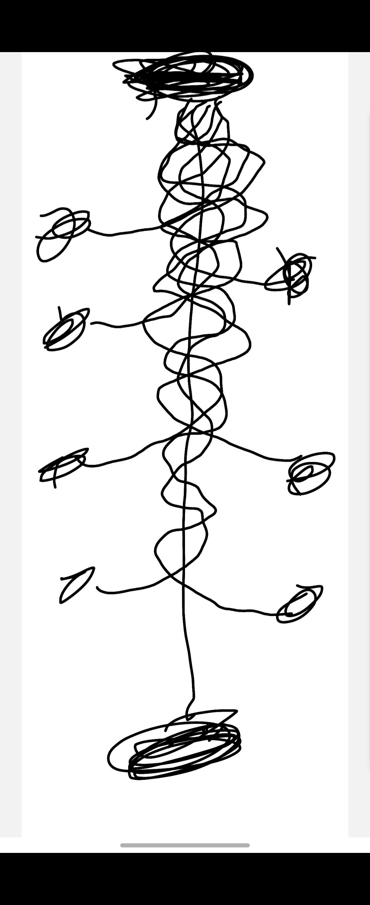
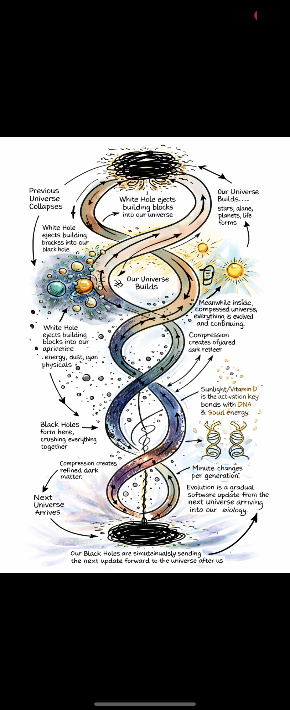
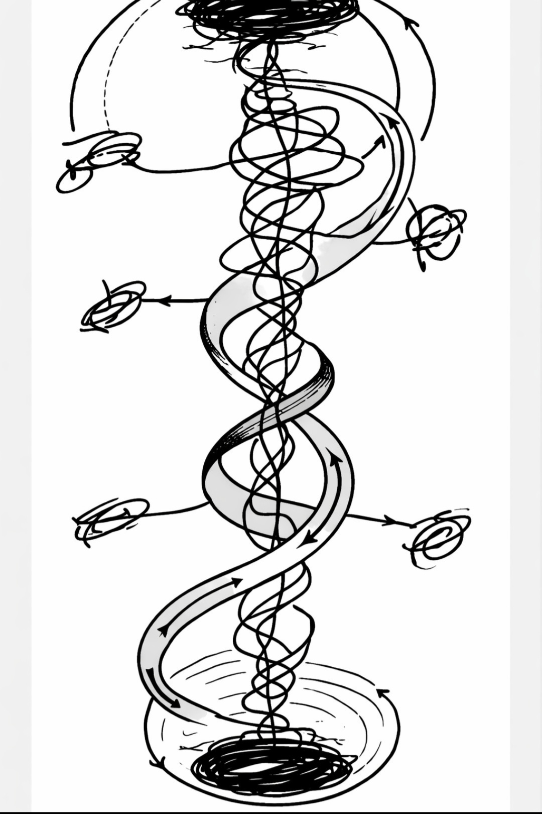

“You shadow what you light... give light you cast a shadow, give darkness and nothing.”
The Unified Solar Field, Spiral Curvature Gravity & Cosmic Consciousness
Our soul is borrowed energy from the Earth — from Gaia. This is why energy affects our moods so directly. When you feel low energy, you feel down, disconnected. When you are full of energy, you feel alive. We come from the Earth's energy field, and when we die, we return to it.
The energy cycle flows continuously: Us → Earth → Sun → Us. What we call Vitamin D is really Vitamin DNA — sunlight doesn't just feed our bodies, it carries biological information. It updates us at a cellular level through minute changes accumulated across thousands of years.
"We are not separate from the universe.
We are the universe experiencing itself."
Across biology, consciousness, cosmology and ancient wisdom, the same pattern keeps emerging. Not forced — discovered. Three forces, always working as one unified field. This is the architecture underlying the entire theory.
Hypothesis: Three types of matter — ordinary matter, dark matter, and the Higgs field — form the fundamental trinity of physical reality. The Higgs creates the condition for mass. Dark matter carries the information. Ordinary matter is the expressed result. Three roles. Three particles. The pattern of three appearing at the deepest level of matter itself — not constructed, discovered. The same 3 that runs through every frequency, every field, every cycle in this theory, encoded into the very foundation of what exists.
Original Hypothesis — Mark J Azzopardi · 2026
"This pattern was not constructed.
It was discovered — independently, intuitively —
the same geometry, the same fundamental truth.
Knowledge is power. This was an awakening."
— Mark J Azzopardi
From first sketch to fully realised cosmology. The same spiral pattern emerging at every scale — from human biology to the structure of the universe. Click any diagram to expand.



The Sun emits three distinct forces that act together as a single unified field. This cannot be reproduced on Earth — no artificial light produces all three in the same cosmic combination. Science has never studied all three simultaneously. That is the gap.
Charged particles streaming from the Sun, interacting with Earth's magnetic field and every living organism's biological rhythms. The carrier wave of the unified field.
Triggers Vitamin DNA synthesis, activates DNA repair mechanisms, and drives cellular updates. The biological information channel — minute instructions written into our cells across generations.
Regulates serotonin, melatonin, circadian rhythms and consciousness itself. The frequency of soul energy — the one we feel when we step outside and feel truly alive.
Solar wind, UV radiation and visible sunlight interact simultaneously as a unified biological field — producing evolutionary and consciousness effects that cannot be replicated or understood by studying each component in isolation. Science has never tested all three together. That is the gap this theory identifies.
When a black hole forms, it compresses all matter into a single point, refining it into dark matter. White holes eject this refined matter as the building blocks of the next universe — stars, planets, life forms, already carrying the evolutionary data of everything that came before.
Evolution is a gradual software update from the next universe arriving into our biology. Our black holes are simultaneously sending the next update forward. When we die, our soul energy fuses back into this cycle. We are not passengers. We are the process.
Some connections are confirmed. Others emerging. A few remain untested — where this theory becomes a genuine scientific hypothesis.
Low Vitamin D correlates strongly with depression and fatigue. Sunlight triggers serotonin production. The soul/energy/mood connection has measurable biological reality.
Environmental influences including solar exposure switch genes on and off. Some changes are heritable across generations. Minute biological changes over time is real science.
DNA, shells, plant growth, weather systems, galaxy arms — the same spiral curvature at every scale. No unified explanation exists for why gravity consistently produces this form.
Solar wind interactions with Earth's magnetosphere linked to measurable changes in human heart rate variability and biological rhythms during geomagnetic events.
HeartMath Institute: the heart's EM field extends several feet beyond the body. Heart, brain and breath as a unified three-frequency biological field producing measurable benefits.
The combined effect of solar wind + UV + visible light simultaneously has never been formally studied. The emergent property of all three together is completely unknown territory.
Two interlocking hypotheses: that dark matter undergoes state change upon entering an active stellar field, and that the solar system functions as a staged, multi-epoch delivery system for evolutionary biological information — operating across both cosmic space and cosmic time.
Dark Matter Activation Hypothesis
Dark matter floats everywhere in the universe — invisible, passing through all matter without interaction. Inert and undetected. The universe is full of something we cannot see and cannot feel. Not yet.
Current models describe dark matter as non-interacting with electromagnetic radiation. It passes through ordinary matter at all scales without measurable effect. Its distribution is inferred only through gravitational lensing and galactic rotation curves.
The heliosphere is where our Sun draws the line — the edge of its breath, its magnetic reach. A bubble 100 AU across. Everything inside is ours. Everything outside is something else.
The heliosphere is the region of space dominated by the Sun's solar wind and magnetic field. It extends approximately 100 AU and terminates at the heliopause, where solar wind pressure equals interstellar medium pressure. It represents a genuine electromagnetic boundary condition.
Here is the hypothesis: dark matter crossing the heliosphere boundary is activated by UV radiation and solar wind. It changes state. It picks something up. It begins carrying evolutionary data toward life.
Proposed mechanism: dark matter particles entering the solar electromagnetic field undergo vibrational excitation. UV radiation activates those vibrations. Solar wind plasma distributes activated particles throughout the inner solar system, where they interact with biological systems at the molecular level.
Not all dark matter is the same. There are two kinds — not by what they are made of, but by what has happened to them. Some dark matter has passed through a star's heliosphere, bonded with solar radiation, and been given something to carry. It has a destination. It has information. It is active. The rest has never bonded with anything. It drifts through the universe, through galaxies, through planets, through your body — and nothing happens. Not because it cannot interact, but because it has not yet been written to. It is the universe's blank medium. Raw. Waiting. Everywhere — but empty until a star reaches out and fills it.
The hypothesis proposes dark matter exists in two functional states determined by stellar interaction history — not by composition. State One: heliosphere-activated dark matter, which has passed through a stellar electromagnetic boundary, undergone vibrational excitation through UV and solar wind bonding, and now carries encoded information as a carrier medium. State Two: unactivated dark matter, which has not encountered a stellar field of sufficient intensity or lifecycle stage to induce bonding — remaining functionally inert and passing through matter without meaningful interaction. This distinction would explain the profound inconsistency in dark matter direct detection results: experiments are not always measuring the same population. The ratio of activated to unactivated dark matter passing through any detector would vary depending on proximity to stellar fields, galactic position, and solar activity cycles. Detection events would correspond to activated particles. Null results would correspond to the unactivated majority.
The Cosmic Relay Hypothesis
The Sun is not static. It has stages. Right now it is in one stage — and the dark matter it activates carries one kind of signal. When it expands, it will reach the gas giants. They will absorb its molecules, change their composition, and the light and UV they emit back into the system will change. A new signal. A new chapter.
The Sun's main sequence lifecycle spans approximately 10 billion years. During red giant expansion, significant mass transfer to outer bodies including gas giants is physically plausible. A change in Jupiter or Saturn's atmospheric composition would alter their electromagnetic emission profiles — potentially changing the character of the solar field's interaction with dark matter.
The gas giants were not placed where they are by accident. Jupiter and Saturn are not just big planets sitting in the outer system doing nothing. They are reserves. When the Sun begins to exhaust its fuel and expands, it does not simply die — it reaches. It expands outward toward the gas giants, absorbs their material, and recharges. The solar system was designed with its own refuelling mechanism built in. The Sun does not run out. It draws on what was always there waiting for it. Death was never part of the plan — renewal was.
Standard stellar models predict the Sun will expand into a red giant in approximately 5 billion years, engulfing the inner planets. The hypothesis proposes a reinterpretation: rather than terminal expansion, the Sun's reach toward the gas giants represents a designed refuelling cycle — Jupiter and Saturn's combined mass (Jupiter alone contains 2.5 times the mass of all other planets combined, composed primarily of hydrogen and helium — the Sun's own fuel) functioning as a stellar reserve tank. Mass transfer from gas giants to an expanding Sun could reignite fusion processes, extending the stellar lifecycle beyond current models. The solar system's architecture — small rocky planets close in, massive gas reservoirs positioned further out — is precisely the configuration you would design if the outer planets were intended as long-term fuel storage.
We will not be here on Earth when the Sun expands. By then, we will have spread across the stars. We will be observing from other planets, inside other stellar fields, receiving different evolutionary signals from different suns at different stages. The journey is not escape. It is graduation.
On a civilisational timescale of billions of years, the hypothesis predicts: humanity disperses across multiple stellar systems; each system's stellar lifecycle stage generates a unique dark matter activation signature; biological evolution continues in differentiated directions across stellar populations; the universe functions as a distributed evolutionary curriculum with each star system as a distinct instructional environment.
Sun activates dark matter at the heliosphere boundary → heliosphere-bonded dark matter carries evolutionary signal inward → unactivated dark matter passes through inert, awaiting a stellar bond → inner planets receive the encoded update → life evolves incrementally, generation by generation → when the Sun's fuel diminishes it expands toward the gas giants → Jupiter and Saturn's hydrogen-helium mass recharges the stellar cycle → the Sun does not die — it renews → humanity, long since spread across star systems, continues receiving evolutionary signals from new stellar fields → the solar system's renewal becomes the universe's next chapter.
Evolution is not random. It is not purely competitive. It is a structured curriculum — written in solar radiation, carried by dark matter, paced by planetary architecture, and delivered across geological and cosmological time. The universe is not indifferent to life. It is its author.
If activated dark matter carries evolutionary information — what encodes it? What determines the sequence of updates? What decides what comes next? That answer, if it exists, sits at the intersection of cosmology, biology, and something we do not yet have a name for.
The solar system was not assembled randomly. Every planet, every giant, every ring of ice and gas occupies a precise position in a design that only becomes visible across billions of years. When you understand what the gas giants are really for — the whole arc becomes clear.
Look at how the solar system is laid out. Small rocky planets close in — Mercury, Venus, Earth, Mars. Then a belt of rock. Then the gas giants — Jupiter, Saturn — enormous, mostly hydrogen and helium, the same fuel the Sun burns. Then more ice giants further out. This is not random. This is an architecture. The small planets are where life happens. The gas giants are the reserve tank. And between them, the belt — a boundary marker. The machine was built to run for billions of years and then refuel itself. Nothing about this was accidental.
The solar system's compositional architecture is striking in context of this hypothesis. The four inner rocky planets are predominantly silicate and iron. The asteroid belt forms a natural boundary. Beyond it, Jupiter — the solar system's largest body — contains more mass than all other planets combined, composed of approximately 90% hydrogen and helium by number of molecules, the precise fuel that powers solar fusion. Saturn mirrors this composition. The hypothesis proposes this is not coincidental but functional: the gas giants represent a staged stellar fuel reserve, positioned at gravitationally stable distances, preserved across the Sun's main sequence lifetime for use during the expansion phase. The solar system's layout is the architecture of a self-sustaining stellar lifecycle.
When the Sun begins to expand it does not just explode outward in one event. It expands in stages. And each time it reaches a gas giant, two things happen at once — it absorbs the material and refuels, and the giant acts as a stabiliser. It holds the Sun's expansion in check. Anchors it. Gives it something to balance against. Then when that stabiliser is absorbed, the Sun holds itself for a while on its own. Then expands again toward the next one. Each giant is a rung on a ladder. The Sun climbs slowly, deliberately, held at each step, until it can finally hold its own gravity without any support at all.
Standard models treat red giant expansion as a relatively continuous process driven by hydrogen shell burning after core hydrogen exhaustion. The hypothesis proposes a reinterpretation: that the gas giants function as sequential stabilisation bodies — their gravitational mass and compositional transfer providing both fuel input and gravitational anchoring during discrete expansion phases. Jupiter at 5.2 AU and Saturn at 9.5 AU represent two distinct stabilisation distances, consistent with staged expansion radii. Each absorption event would: (1) introduce fresh hydrogen-helium fuel to reignite or sustain fusion, (2) provide gravitational mass transfer that temporarily stabilises the stellar radius, and (3) alter the solar electromagnetic signature — changing the character of dark matter activation at each new stage. The Sun does not simply expand and die. It ascends through stages, each one held by a planetary stabiliser, until it achieves gravitational self-sufficiency.
Core hydrogen fusion. Stable output. Dark matter activated at the heliosphere boundary carries the current evolutionary signal. Life on Earth receives its updates through the daily cycle of solar radiation and sleep. The machine runs.
The Sun expands toward Jupiter. Mass transfer begins — hydrogen and helium fuel reignites fusion, Jupiter's gravitational mass stabilises the expansion radius. The Sun holds at this stage. A new dark matter activation signature — the next evolutionary chapter — begins transmitting. Humanity has long since left Earth.
The Sun expands again. Saturn's mass — its rings, its hydrogen core — feeds the next phase. A second stabilisation. A second hold. Another new signal. Another update to whatever life now exists across the star systems. The Sun is climbing its ladder, rung by rung.
Having absorbed its stabilisers and rebalanced, the Sun reaches a state where it can hold its own gravity without external support. Then — having completed its cycle, having transmitted every update it was encoded to deliver — it collapses. Not into death. Into a black hole. Into the next level.
Everything the Sun ever encoded. Every life that lived under it. Every evolutionary update it ever transmitted. Every piece of consciousness it ever helped develop — compressed into the singularity. Merged. Crushed down to pure information. Then the white hole opens on the other side. The new universe begins — not from nothing, but from everything. Already updated. Already advanced. The data carries forward.
This is what I said from the beginning — when we die, we move to the next level of consciousness. The soul energy does not disappear. It returns to Earth, to the Sun, and eventually into the collapse. Our consciousness is part of the data being compressed. Every thought, every experience, every evolutionary step taken under this Sun — it all goes in. And on the other side, the new universe starts with all of that already inside it. It does not have to discover what we discovered. It inherits it. That is why each universe is more complex, more conscious, more alive than the one before. We are not living in the first universe. We are living in the accumulated wisdom of everything that came before us.
Black holes are the universe's most extreme information compression systems. The holographic principle in theoretical physics proposes that all information describing a volume of space can be encoded on its boundary surface — meaning nothing is truly lost in gravitational collapse, it is transformed. The hypothesis extends this: the black hole formed from a stellar collapse does not merely compress mass, it compresses the entire informational legacy of that stellar system — every dark matter activation signature, every epigenetic update transmitted to biological life, every evolutionary step encoded across geological time. This compressed informational state then seeds the next universe via a white hole singularity — meaning the new universe begins pre-loaded with the complete dataset of its predecessor. Each successive universe inherits increasing complexity, consciousness, and biological sophistication. The question of why our universe has the specific constants it does — why it is so precisely tuned for life — may have a simple answer: it was tuned by the universe before it.
At the collapse, dark matter faces a sorting. The activated dark matter — the kind that bonded with the Sun, that carried the evolutionary signal, that delivered its payload to life — gets pulled into the black hole. It becomes part of the compressed data. It goes forward into the new universe as part of the foundation. But the unactivated dark matter — the kind that never bonded, that drifted through everything without carrying anything — gets rejected. Pushed back out. The black hole has no use for blank medium. It returns to the galactic field, back to the void, waiting again. Waiting for the next star to write something into it. The universe wastes nothing. Even the rejected dark matter has a role — it is the blank page that the next star will write on.
The hypothesis proposes a functional sorting of dark matter at stellar collapse based on activation state. Heliosphere-activated dark matter — having undergone vibrational bonding with solar electromagnetic radiation and having interacted with biological systems — carries encoded informational content. This activated population would be captured by the gravitational collapse and incorporated into the singularity's informational substrate, contributing to the data compressed into the new universe. Unactivated dark matter — inert, unbonded, carrying no encoded information — would interact only gravitationally, and in models where dark matter has self-repulsive or weakly interactive properties at high densities, could be expelled during the collapse event or remain in the galactic halo as the stellar mass collapses. This sorting mechanism would explain why each successive universe potentially contains increasingly rich dark matter activation potential — the activated legacy is inherited, while the blank medium is recycled back into the raw material of the next stellar generation.
The black hole does not just take. It gives back. Slowly — but it gives back. Hawking radiation is the leak at the edge of the event horizon, the universe finding a way to get the data back out. But that is not the only channel. Think about what happens when matter is broken down at the deepest level — when particles annihilate, when atoms are torn apart, when a living thing dies and its structure collapses. There is a pulse. Something gets emitted that carries the informational signature of what that thing was. That is dark matter. Not random energy — a structured release. The record leaving. The soul pulse. And then it travels — back through the field, back toward the Sun, back toward the source, and eventually back into the black hole to be compressed and carried forward. The universe is always in conversation with itself. Even across billions of years. Even across the gap between universes.
Hawking radiation is theoretically established: black holes emit thermal radiation from their event horizons due to quantum effects, slowly evaporating over cosmological timescales. The standard interpretation treats this radiation as random and thermal — but it sits at the centre of the unresolved black hole information paradox. Information that falls into a black hole appears to be destroyed when it evaporates; but quantum mechanics forbids information destruction. The hypothesis resolves this paradox directly: Hawking radiation is not random thermal noise but structured transmission — the black hole slowly broadcasting its compressed informational payload back into the universe as dark matter pulses. The second channel is matter annihilation: when particles annihilate or complex structures disintegrate, conservation laws require all quantum information to be preserved. The hypothesis proposes that this conservation manifests as a dark matter pulse — the informational signature of the collapsed structure emitted as activated dark matter carrying the record of what that matter was. At the biological scale, this maps precisely onto the soul hypothesis: death releases a structured dark matter pulse encoding the informational legacy of that organism, which re-enters the solar field, eventually returning to the black hole to be incorporated into the compressed data seeding the next universe. The black hole is simultaneously the receiver and the transmitter. The cycle is closed.
"We are not afraid of the Sun dying
because the Sun does not die.
It does what we do —
it finishes one level,
compresses everything it learned,
and begins the next.
We are not living in a universe.
We are living inside a thought
that the last universe had
just before it woke up."
Dark matter drifts inert through the galaxy → a star's heliosphere activates it, bonding solar information into its structure → it carries evolutionary updates to biological life across the inner solar system → life receives the updates during sleep, expressed at dawn through solar activation → consciousness develops, generation by generation, across geological time → when a living thing dies, the collapse of its biological structure releases a dark matter pulse — the informational record of that life, emitted back into the field → that soul pulse travels back through the solar field and toward the source → the Sun's fuel diminishes → it expands toward Jupiter — the first stabiliser absorbs, refuels, holds → expands again toward Saturn — the second stabiliser absorbs, refuels, holds → the Sun achieves gravitational self-sufficiency → having completed its transmission cycle, it collapses into a black hole → every activation, every epigenetic update, every evolutionary step, every conscious experience across billions of years is compressed into the singularity → the black hole slowly transmits the compressed data back out as Hawking radiation and dark matter pulses — the darkness between stars is not empty, it is the broadcast → unactivated dark matter is rejected back into the galactic void, the blank page for the next star → the white hole opens → a new universe births — not from nothing, but from everything → already updated → already advanced → carrying the full data of every universe that came before it → and somewhere in that new universe, under a new sun, a new form of life opens its eyes for the first time — and already, without knowing why, feels like it has been here before.
Every night, as the body stills and the heart slows, something unprecedented happens. The same physics that governs Earth's relationship with the Sun governs your biology. Sleep is not an absence of life. It is the most active transmission window we have.
The heart generates a field around us just like Earth generates a field around itself. When you are awake — faster heartbeat, active mind, full engagement with the world — that field is dense, structured, alive. It deflects. It protects. It separates you from everything outside. But when you sleep, the heart slows. The field does not disappear. It changes. It shrinks. It thins. The wall does not fall — it becomes a membrane.
The HeartMath Institute has measured the heart's electromagnetic field extending several feet beyond the body as a toroidal structure — geometrically identical to Earth's magnetosphere. During waking activity, heart rate variability produces a high-frequency, high-coherence field. During deep sleep, heart rate drops significantly, field amplitude decreases, and coherence reduces. A less coherent, lower-amplitude electromagnetic field would present reduced resistance to dark matter particles with weak-force interactions — functionally analogous to the way Earth's magnetotail presents reduced deflection on the night side.
Confirmed — Supporting Science
The Schumann Resonance — Earth's base electromagnetic frequency at 7.83 Hz — overlaps directly with human alpha brainwave range. Herbert König at Munich University confirmed the link between Schumann frequencies and brain rhythms. During sleep, human brainwaves naturally drift toward this frequency range. A stable Schumann Resonance correlates with rest, healing, and biological restoration — confirmed across multiple studies. This means during the night window, the body is not only reducing its own electromagnetic output — it is simultaneously entraining to Earth's base frequency. The planetary field and the biological field are synchronising. This directly supports the night window mechanism: the body is not passive during sleep, it is actively aligning with the planet's electromagnetic ground state — maximising receptivity at exactly the moment dark matter flux increases on the night side.
Dark matter is not evenly distributed in time. It comes from a direction. The galaxy is moving through a halo of it, and that movement creates a wind — a stream — that hits us differently depending on which way Earth is facing. During the night, depending on the season, you are sleeping on the side of Earth that faces directly into that stream. Less planet between you and it. Less shield. More exposure.
The solar system moves through the galactic dark matter halo at approximately 220 km/s, generating a directional dark matter wind. As Earth rotates, the night side periodically faces into the incoming stream with reduced planetary shielding. Physicists at SENSEI (Fermilab) and other direct detection experiments are actively measuring this daily modulation in dark matter flux — and have confirmed a directional dependence that follows Earth's rotation cycle. The night side exposure varies by season, reaching maximum direct exposure in September when Earth faces fully into the wind.
DNA is already known to respond to its environment. That is epigenetics. The code does not change — but how it is read changes based on signals from outside. Stress changes it. Light changes it. Diet changes it. The body is already designed to receive external information and update how it expresses itself. Dark matter interacting with atomic nuclei — with the actual physical structure of your DNA — is not a different kind of mechanism. It is the same mechanism. Just a signal we have not named yet.
Epigenetics demonstrates that gene expression is dynamically regulated by environmental signals — external information modifies which parts of the genome are read, without altering the underlying sequence. Dark matter direct detection experiments search for interactions with atomic nuclei — the same physical substrate DNA is built from. If dark matter carries structured information encoded through solar activation (as proposed in the Dark Matter Activation Hypothesis), and if epigenetic machinery is sensitive to weak nuclear interactions during the low-electromagnetic-noise window of deep sleep, the result would be directional, responsive, non-random biological updating. Not mutation. Calibration.
The subconscious does not speak in language. It speaks in symbol, sensation, drive, dream. When the conscious mind goes offline during sleep — when the defensive, rational, filtering prefrontal cortex quiets — what remains is the older, deeper system. The part that runs the body. The part that holds memory across generations. If an update is coming in, this is where it lands. Not as a thought. As a felt shift. A new fear. A new pull. A dream that changes how you see yourself. That is not imagination. That is integration.
During REM sleep, the prefrontal cortex — responsible for logical evaluation and critical filtering — undergoes marked deactivation. The limbic system, amygdala, and hippocampus remain highly active, processing emotional memory, threat patterns, and survival information. This is the biological architecture most likely to receive, integrate, and express non-verbal environmental signals. Dreams represent the subconscious processing recent experience alongside deeper pattern libraries — potentially including signals absorbed during the low-resistance window of deep sleep. Epigenetic changes initiated during sleep would first manifest as altered neural drives, instincts, and intuitions before being expressed in subsequent behaviour and physiology.
I called it Vitamin DNA from the beginning — not Vitamin D. Because sunlight does not just feed the body. It does something far more specific. The dark matter came in during the night and embedded itself in your cellular structure. It sits there dormant, carrying the update. Then morning arrives. The sun hits your skin. And something unlocks. The light is not just energy. It is the key. What was written in the dark gets activated in the light. This is the completion of the cycle. Night writes. Sun activates. You become.
Vitamin D is not a conventional nutrient — it is a steroid hormone whose receptor (VDR) operates as a nuclear transcription factor. Upon solar UV-B activation, Vitamin D3 is synthesised in the skin, converted to its active form calcitriol, and the VDR complex enters the cell nucleus where it binds directly to DNA response elements — switching gene expression on and off across hundreds of target genes. The hypothesis proposes that dark matter interactions during sleep prime specific epigenetic sites, and that VDR activation upon morning solar exposure is the trigger mechanism that expresses those primed updates. The sun does not write the code. It reads it. What was embedded in the dark, the light brings forward into biology. This would explain why full-spectrum natural sunlight — not artificial UV — is biologically distinct: it carries the complete activation signature that artificial sources cannot replicate. Supporting observation: hibernating animals enter their longest, deepest sleep precisely when UV-B availability is at its annual minimum — reduced solar activation, reduced VDR stimulation, the body following the weakened signal into conservation mode. This is the same mechanism at seasonal scale. The Sun does not just activate us at dawn. It regulates how alive everything is.
While we sleep on the dark side of Earth, the Sun is still working. The magnetotail stretches out on the night side and solar energy is being delivered to exactly where sleeping populations are. The auroras are the visible proof of this — you can literally see the energy transfer happening at the boundary of Earth's magnetosphere. Light produced at the exact point where solar energy meets Earth. That is not decoration. That is the receipt. The hypothesis is that this electromagnetic delivery is the recharge that happens during sleep. Not food — food sustains the body's structure. This is something different. This is the Sun reaching around to the dark side and restoring what the day took out. And look at what nature does — hibernating animals sleep through the longest darkest months, when the Sun is weakest and nights are longest. Not just because of cold or food scarcity. Because the solar activation signal is at its minimum. The body follows the reduced signal and slows all the way down. The Sun does not just activate us at dawn. It regulates how alive everything is, at every scale, from the daily cycle to the seasons to the years.
Earth's magnetotail is a confirmed night-side phenomenon. Solar wind pressure compresses Earth's magnetic field on the day side and stretches it into a long tail on the night side — extending hundreds of Earth radii away from the Sun. Solar wind particles interact with the magnetosphere at the tail boundary, releasing energy earthward. Aurora activity is the observable signature of this energy transfer — confirmed, measured, and entirely a night-side event. The hypothesis proposes that this solar energy delivered to the night side electromagnetically interacts with biological systems during sleep, contributing to the restorative function of sleep through a mechanism that has not yet been studied. The timing correlation is real: magnetotail energy release is a night-side phenomenon occurring precisely when biological organisms sleep. Whether humans and other biological organisms absorb and restore energy through this electromagnetic mechanism is an original hypothesis presented here for the first time — unstudied, untested, and proposed as a direction for future investigation.
This is the full loop. Every night of your life, without exception, this cycle runs. The Sun charges the day. Night arrives and the planet opens up. Your heart slows, the wall thins, and something that has been travelling through the galaxy reaches you — carrying an update encoded by the Sun at the edge of the solar system. Your subconscious receives it. Processes it. And at dawn, the Sun returns and fires the key that unlocks what the night wrote. You wake up and you don't know why you feel slightly different, why something shifted, why a new thought arrived that wasn't there yesterday. That is not random. That is the cycle completing. Night writes. Sun activates. You become. Seven billion people running this same update loop every single night. The planet breathing in and out. The universe writing to its own biology, one sleep at a time.
The seven-step sequence below represents the complete proposed biological transmission cycle — each step grounded in confirmed or emerging science, assembled here for the first time as a unified mechanism. No single step is speculative in isolation. The hypothesis is that they operate as a connected system: a nightly information transfer loop running from solar activation at the heliosphere, through Earth's magnetosphere, through the quieted biological field during sleep, into epigenetic priming at the DNA level, and completing with solar VDR activation at dawn. The full sequence: solar charging → magnetotail accumulation → heart field reduction → dark matter penetration → epigenetic priming → subconscious integration → Vitamin DNA activation. One complete cycle. Every night.
Sun charges the dayside — full-spectrum solar radiation activates dark matter at the heliosphere boundary. The living world absorbs solar information through UV, light and electromagnetic resonance.
Night arrives — Earth's magnetosphere stretches into its tail — stored solar energy accumulates on the night side. The crust quiets. Human electromagnetic noise drops as populations sleep.
The heart slows — the toroidal electromagnetic field generated by the heart decreases in amplitude and coherence. What was a dense, structured wall becomes a permeable membrane.
Dark matter penetrates — with reduced planetary shielding on the night side and a quieted biological field, activated dark matter carrying solar-encoded evolutionary information reaches atomic nuclei directly.
Epigenetic update initiates — weak nuclear interactions with DNA's molecular structure trigger epigenetic signals. Not random mutation. Directional calibration based on what the organism has experienced and what the solar field has encoded.
Subconscious processes the signal — the limbic system, freed from prefrontal filtering, integrates the update. It surfaces as dreams, emotional shifts, new instincts, altered drives. The organism wakes subtly different.
Dawn — Vitamin DNA fires — UV-B from the sun hits the skin and triggers Vitamin D3 synthesis. But this is not nutrition. The Vitamin D receptor (VDR) enters the cell nucleus as a transcription factor and binds directly to DNA — activating the epigenetic sites that dark matter primed during the night. The heart accelerates, the electromagnetic wall rebuilds, the Schumann Resonance spikes. The update goes live. The cycle completes. Night writes. Sun activates. You become.
The night window works because the conditions are right — the body is still, the heart quiets, the wall comes down and the update writes through. That's the scheduled cycle. But sometimes the Sun doesn't wait. A solar flare fires. A coronal mass ejection hits Earth's magnetosphere. The geomagnetic field that every living thing on this planet is calibrated to suddenly shifts — violently, in the middle of the day. Your cryptochrome proteins feel it. People feel it too — anxiety, restlessness, headaches, a strange unease they can't place. That's not illness. That's the signal arriving through a channel that wasn't scheduled to be open. The night window is the Sun's regular transmission — quiet, gradual, every single night of your life. The solar flare is the emergency broadcast. The Sun didn't wait for darkness. It had something to transmit and it pushed it through anyway. Two update windows. One asks permission. One doesn't.
Solar flares and coronal mass ejections disturb Earth's magnetosphere, producing geomagnetic storms confirmed to affect biological systems across multiple species — birds, whales, insects, bacteria, and humans. The mechanism involves cryptochrome proteins, which function simultaneously as the core of the circadian clock and as magnetic field sensors via the radical pair mechanism. When the geomagnetic field is disturbed by a flare, cryptochrome is disturbed. When cryptochrome is disturbed, its repression of the CLOCK/BMAL1 transcriptional complex is altered — directly modifying gene expression. This is confirmed science. The hypothesis is that this constitutes a second biological update window — unscheduled, high-intensity, daytime — distinct from the gradual night window but using the same underlying biological antenna. The night window is the scheduled transmission. The solar flare window is the forced interrupt. The organism receives both. Whether the information carried through the forced daytime channel is directional evolutionary signal or noise remains the open question — and the one worth investigating.
"Sleep is not the absence of consciousness.
It is the opening of the only window
through which the universe can write to us directly —
while the body is still, the heart is quiet,
and the wall between us and the dark
becomes thin enough to let the light through."
— Mark J Azzopardi
Confirmed Earth's seismic noise drops measurably at night as populations sleep — the planet's electromagnetic signature quiets on a predictable daily cycle. Confirmed The heart generates a toroidal electromagnetic field extending beyond the body, measurably different in amplitude and coherence during sleep. Confirmed Dark matter flux has a daily directional modulation tied to Earth's rotation — actively measured by experiments including SENSEI at Fermilab. Confirmed Epigenetic mechanisms demonstrate DNA expression is dynamically responsive to environmental signals. Confirmed The Vitamin D receptor (VDR) is a nuclear transcription factor — upon solar UV-B activation it enters the cell nucleus and binds directly to DNA, regulating the expression of hundreds of genes. It does not merely supply a nutrient. It reads the genome. Hypothesis That dark matter interaction during sleep primes specific epigenetic sites, and that VDR activation upon morning solar exposure is the trigger that expresses those primed updates — completing a full night-to-dawn biological transmission cycle — remains to be demonstrated. But every component mechanism is real. The architecture already exists.
The complete theory — all seven parts — written as a formal academic paper. Every hypothesis clearly separated from confirmed science. Every testable prediction stated. The full arc from soul to universe in one document.
Download the PaperQuestions about the theory, collaboration, research interest, or media enquiries — reach out directly.